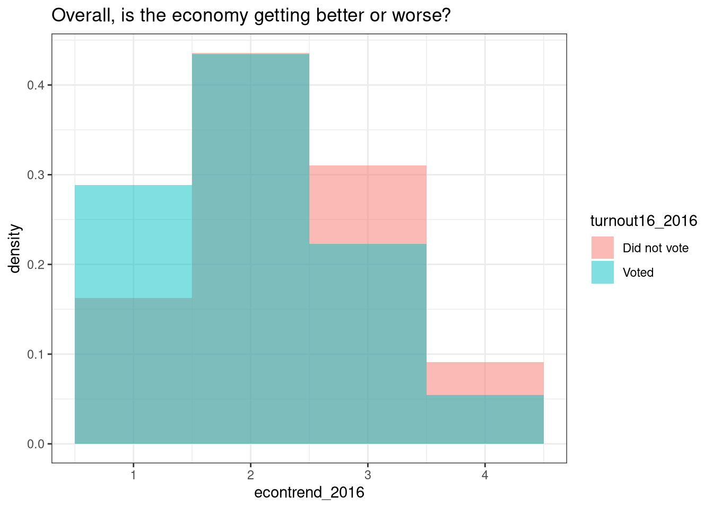
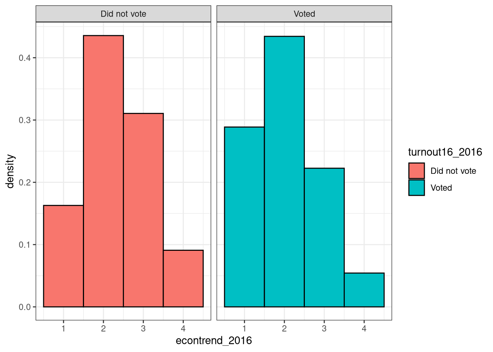

# Load tidyverse
library(tidyverse)Get out the vote
In this case study, you will use data on attitudes and beliefs in the United States to predict voter turnout. You will apply your skills in dealing with imbalanced data and explore more resampling options.
Predicting voter turnout from survey data 🗳
So far, you have built one regression model and one classification model, and now it’s time for our third case study. In this case study, we are going to use a survey of voters in the United States to predict voter turnout, whether someone did or did not vote, based on their responses on the survey.
This data comes from a research collaboration of about two dozen analysts and scholars across the political spectrum in the United States who want to understand what is important to voters and how the views of the electorate in the U.S. are evolving.
Views of the Electorate Research Survey (VOTER) 🇺🇸
- Democracy Fund Voter Study Group
- Politically diverse group of analysts and scholars in the United States
- Data is freely available
There are a lot of questions on this survey, so many that I can’t go over them all with you in this course, but they are all about people’s opinions on political and economic topics. The survey asks respondents how they feel about where the US economy is headed, whether they think their vote makes a difference, and how important various issues are to them.
Views of the Electorate Research Survey (VOTER) 🇺🇸
- Life in America today for people like you compared to fifty years ago is better? about the same? worse?
- Was your vote primarily a vote in favor of your choice or was it mostly a vote against his/her opponent?
- How important are the following issues to you? + Crime + Immigration + The environment + Gay rights
The dataset that you have to work with in these exercises has about 40 variables, or questions on the survey, and the variable turnout16_2016 tells us whether that respondent said they voted in the 2016 election or not. Notice that the answers to the survey questions have been coded as integers. This is actually pretty convenient for modeling, but in a situation like this, you need to look at a data dictionary or guide to understand what the integers mean.
For example, one of the questions asked survey respondents how much they agree or disagree with this statement about how fair society in America is and their responses are coded as these integers. All of the survey responses are coded as integers like this, which means we can use these responses directly for modeling. I’ll include the answers that correspond to the integers when it’s relevant in this case study, but you can go get this data yourself as well.
We are going to build machine learning models to predict whether a respondent voted or not based on their responses to the survey questions. You are going to be able to use many of the approaches you’ve been practicing already in the course, and develop some new ones.
It’s time for you to get started with this new dataset and see what you can learn.
Choose an appropriate model
In this case study, you will predict whether a person voted or not in the United States 2016 presidential election from responses that person gave on a survey. The survey focuses on opinions about political and economic topics. What kind of model will you build?
To predict group membership or discrete class labels, use classification models.
Explore the VOTER data
To do a good job with predictive modeling, you need to explore your dataset to understand it first. Start off this modeling analysis by checking out how many people voted or did not vote, and the answers to a few questions. The answers to the questions on this survey have been coded as integers, and the corresponding text has been provided for you here.
Instructions
- Load
tidyverse.
- Take a look at voters to check out the data.
voters <- read_csv("../Data/voters.csv")
# Take a look at voters
glimpse(voters)Rows: 6,692
Columns: 43
$ case_identifier <dbl> 779, 2108, 2597, 4148, 4460, 5225, 5903, 6059, 80…
$ turnout16_2016 <chr> "Voted", "Voted", "Voted", "Voted", "Voted", "Vot…
$ RIGGED_SYSTEM_1_2016 <dbl> 3, 2, 2, 1, 3, 3, 3, 2, 4, 2, 3, 3, 4, 4, 3, 3, 2…
$ RIGGED_SYSTEM_2_2016 <dbl> 4, 1, 4, 4, 1, 3, 4, 3, 4, 3, 2, 2, 3, 2, 4, 3, 2…
$ RIGGED_SYSTEM_3_2016 <dbl> 1, 3, 1, 1, 3, 2, 1, 3, 1, 1, 1, 4, 1, 1, 1, 1, 3…
$ RIGGED_SYSTEM_4_2016 <dbl> 4, 1, 4, 4, 1, 2, 1, 2, 3, 2, 4, 1, 3, 4, 2, 2, 1…
$ RIGGED_SYSTEM_5_2016 <dbl> 3, 3, 1, 2, 3, 2, 2, 1, 3, 2, 2, 2, 3, 3, 2, 3, 2…
$ RIGGED_SYSTEM_6_2016 <dbl> 2, 2, 1, 1, 2, 3, 1, 2, 1, 2, 1, 1, 1, 2, 1, 1, 2…
$ track_2016 <dbl> 2, 2, 1, 1, 2, 2, 1, 2, 2, 2, 1, 2, 2, 3, 2, 2, 2…
$ persfinretro_2016 <dbl> 2, 3, 3, 1, 2, 2, 2, 3, 2, 1, 2, 3, 2, 2, 2, 2, 2…
$ econtrend_2016 <dbl> 1, 3, 3, 1, 2, 2, 1, 3, 1, 1, 1, 3, 2, 1, 4, 3, 2…
$ Americatrend_2016 <dbl> 1, 1, 1, 3, 3, 1, 2, 3, 2, 1, 3, 3, 2, 1, 1, 3, 1…
$ futuretrend_2016 <dbl> 4, 1, 1, 3, 4, 3, 1, 3, 1, 1, 3, 1, 1, 4, 3, 4, 3…
$ wealth_2016 <dbl> 2, 1, 2, 2, 1, 2, 2, 1, 2, 2, 2, 1, 2, 2, 2, 2, 1…
$ values_culture_2016 <dbl> 2, 3, 3, 3, 3, 2, 3, 3, 1, 3, 3, 2, 1, 1, 3, 8, 3…
$ US_respect_2016 <dbl> 2, 3, 1, 1, 2, 2, 2, 3, 3, 3, 3, 3, 3, 2, 3, 3, 3…
$ trustgovt_2016 <dbl> 3, 3, 3, 3, 3, 2, 3, 3, 3, 3, 3, 3, 3, 2, 3, 3, 3…
$ trust_people_2016 <dbl> 8, 2, 1, 1, 1, 2, 2, 1, 2, 1, 2, 1, 2, 8, 8, 2, 2…
$ helpful_people_2016 <dbl> 1, 1, 2, 1, 1, 1, 2, 2, 1, 2, 2, 1, 1, 2, 8, 1, 1…
$ fair_people_2016 <dbl> 8, 2, 1, 1, 1, 2, 2, 1, 2, 1, 1, 1, 2, 2, 8, 2, 1…
$ imiss_a_2016 <dbl> 2, 1, 1, 1, 1, 2, 1, 1, 3, 1, 1, 1, 2, 1, 2, 2, 2…
$ imiss_b_2016 <dbl> 2, 1, 1, 2, 1, 1, 1, 2, 1, 1, 1, 1, 2, 1, 1, 1, 1…
$ imiss_c_2016 <dbl> 1, 2, 2, 3, 1, 2, 2, 1, 4, 2, 3, 1, 2, 2, 3, 1, 1…
$ imiss_d_2016 <dbl> 1, 2, 1, 1, 1, 1, 1, 2, 1, 1, 1, 3, 2, 1, 1, 1, 3…
$ imiss_e_2016 <dbl> 1, 1, 3, 1, 1, 3, 1, 2, 1, 1, 2, 2, 4, 1, 4, 2, 1…
$ imiss_f_2016 <dbl> 2, 1, 1, 2, 1, 2, 1, 3, 2, 1, 1, 1, 2, 1, 3, 2, 2…
$ imiss_g_2016 <dbl> 1, 4, 3, 3, 3, 1, 3, 4, 2, 2, 1, 4, 1, 2, 1, 1, 4…
$ imiss_h_2016 <dbl> 1, 2, 2, 2, 1, 1, 1, 2, 1, 1, 1, 2, 1, 1, 1, 1, 3…
$ imiss_i_2016 <dbl> 2, 2, 4, 4, 2, 1, 1, 3, 2, 1, 1, 2, 1, 2, 2, 2, 3…
$ imiss_j_2016 <dbl> 1, 1, 1, 1, 1, 1, 1, 1, 1, 1, 1, 1, 1, 1, 1, 1, 2…
$ imiss_k_2016 <dbl> 1, 2, 1, 1, 2, 1, 1, 4, 2, 1, 1, 3, 1, 1, 1, 1, 1…
$ imiss_l_2016 <dbl> 1, 4, 1, 2, 4, 1, 1, 3, 1, 1, 1, 4, 2, 1, 1, 1, 3…
$ imiss_m_2016 <dbl> 1, 2, 1, 2, 1, 1, 1, 1, 1, 1, 1, 2, 1, 1, 1, 1, 1…
$ imiss_n_2016 <dbl> 1, 2, 1, 1, 1, 1, 1, 2, 2, 1, 1, 2, 2, 1, 1, 1, 1…
$ imiss_o_2016 <dbl> 2, 1, 1, 1, 1, 2, 1, 2, 2, 1, 1, 2, 2, 2, 2, 1, 1…
$ imiss_p_2016 <dbl> 2, 1, 2, 3, 1, 3, 1, 1, 4, 1, 1, 1, 2, 3, 2, 3, 1…
$ imiss_q_2016 <dbl> 1, 1, 1, 2, 2, 1, 1, 4, 2, 1, 1, 3, 1, 1, 2, 2, 3…
$ imiss_r_2016 <dbl> 2, 1, 1, 2, 1, 2, 1, 2, 4, 2, 2, 1, 3, 2, 2, 2, 1…
$ imiss_s_2016 <dbl> 1, 2, 1, 2, 2, 1, 1, 1, 1, 1, 1, 3, 1, 1, 1, 1, 3…
$ imiss_t_2016 <dbl> 1, 1, 3, 3, 1, 1, 3, 4, 1, 1, 1, 3, 1, 3, 1, 1, 3…
$ imiss_u_2016 <dbl> 2, 2, 2, 2, 1, 3, 3, 1, 4, 2, 3, 2, 4, 3, 3, 3, 1…
$ imiss_x_2016 <dbl> 1, 3, 1, 2, 1, 1, 1, 4, 1, 1, 1, 2, 1, 1, 1, 2, 3…
$ imiss_y_2016 <dbl> 1, 4, 2, 3, 1, 1, 1, 3, 2, 1, 1, 3, 1, 1, 1, 2, 2…- In the call to
count(), use the appropriate variable (turnout16_2016) to see how many examples you have of those who voted and did not vote.
# How many people voted?
voters |>
count(turnout16_2016)# A tibble: 2 × 2
turnout16_2016 n
<chr> <int>
1 Did not vote 264
2 Voted 6428- Check out how three responses on the survey vary with voting behavior by using
group_by()andsummarise().
# How do the responses on the survey vary with voting behavior?
voters |>
group_by(turnout16_2016) |>
summarise(`Elections don't matter` = mean(RIGGED_SYSTEM_1_2016 <= 2),
`Economy is getting better` = mean(econtrend_2016 == 1),
`Crime is very important` = mean(imiss_a_2016 == 2))# A tibble: 2 × 4
turnout16_2016 `Elections don't matter` `Economy is getting better`
<chr> <dbl> <dbl>
1 Did not vote 0.553 0.163
2 Voted 0.341 0.289
# ℹ 1 more variable: `Crime is very important` <dbl>Visualization for exploratory analysis
Visualization is a powerful tool for exploratory data analysis. Plotting your data before you start modeling gives you the opportunity to understand its characteristics. 📈
Instructions
Call
ggplot()to initialize a new plot.Use the correct
ggplot2geom to make a histogram of survey responses for one question (econtrend_2016) and examine the difference by voting behavior.
On this question about how the economy is doing, an answer of 1 indicates “getting better”, 2 indicates “about the same”, 3 indicates “getting worse”, and 4 indicates “don’t know”.
voters <- voters |>
mutate(turnout16_2016 = factor(turnout16_2016))
## Visualize difference by voter turnout
voters |>
ggplot(aes(econtrend_2016,
after_stat(density),
fill = turnout16_2016)) +
geom_histogram(alpha = 0.5,
position = "identity",
binwidth = 1) +
labs(title = "Overall, is the economy getting better or worse?") +
theme_bw()
### Consider this one
ggplot(data = voters, aes(x = econtrend_2016,
fill = turnout16_2016,
after_stat(density))) +
geom_histogram(position = "identity",
binwidth = 1,
color = "black") +
facet_wrap(vars(turnout16_2016)) +
theme_bw()
Imbalanced data
This is real data from the real world, so you need to think through important modeling concerns, including how imbalanced the class is that you want to predict. You have been exploring this data set in the past few exercises. What is your assessment?
There are over \(6428/264 \approx 24.34\) times more people in this survey who said they did vote than who said they did not vote.
Training and testing data
It’s time to split your data into training and testing sets, in the same way that you created these subsets in the previous case studies. You want to split your data about evenly on the class turnout16_2016.
voters_select <- voters |>
mutate(turnout16_2016 = factor(turnout16_2016)) |>
select(-case_identifier) Instructions
Load the
tidymodelsmetapackage, for using the functions to split your data.Use the correct function to create a data split that divides
voters_selectinto 80%/20% sections.Assign the 80% partition to
vote_trainand the 20% partition tovote_test.
# Load tidymodels
library(tidymodels)
# Split data into training and testing sets
set.seed(1234)
vote_split <- voters_select |>
initial_split(prop = 0.8,
strata = turnout16_2016)
vote_train <- training(vote_split)
vote_test <- testing(vote_split)
glimpse(vote_train)Rows: 5,353
Columns: 42
$ turnout16_2016 <fct> Voted, Voted, Voted, Voted, Voted, Voted, Voted, …
$ RIGGED_SYSTEM_1_2016 <dbl> 3, 2, 1, 3, 3, 3, 4, 2, 3, 4, 4, 3, 3, 2, 3, 2, 4…
$ RIGGED_SYSTEM_2_2016 <dbl> 4, 4, 4, 1, 3, 4, 4, 3, 2, 3, 2, 4, 3, 2, 3, 3, 1…
$ RIGGED_SYSTEM_3_2016 <dbl> 1, 1, 1, 3, 2, 1, 1, 1, 1, 1, 1, 1, 1, 3, 2, 2, 2…
$ RIGGED_SYSTEM_4_2016 <dbl> 4, 4, 4, 1, 2, 1, 3, 2, 4, 3, 4, 2, 2, 1, 1, 1, 1…
$ RIGGED_SYSTEM_5_2016 <dbl> 3, 1, 2, 3, 2, 2, 3, 2, 2, 3, 3, 2, 3, 2, 1, 2, 2…
$ RIGGED_SYSTEM_6_2016 <dbl> 2, 1, 1, 2, 3, 1, 1, 2, 1, 1, 2, 1, 1, 2, 1, 1, 1…
$ track_2016 <dbl> 2, 1, 1, 2, 2, 1, 2, 2, 1, 2, 3, 2, 2, 2, 2, 2, 2…
$ persfinretro_2016 <dbl> 2, 3, 1, 2, 2, 2, 2, 1, 2, 2, 2, 2, 2, 2, 2, 2, 3…
$ econtrend_2016 <dbl> 1, 3, 1, 2, 2, 1, 1, 1, 1, 2, 1, 4, 3, 2, 2, 2, 3…
$ Americatrend_2016 <dbl> 1, 1, 3, 3, 1, 2, 2, 1, 3, 2, 1, 1, 3, 1, 4, 3, 3…
$ futuretrend_2016 <dbl> 4, 1, 3, 4, 3, 1, 1, 1, 3, 1, 4, 3, 4, 3, 1, 3, 3…
$ wealth_2016 <dbl> 2, 2, 2, 1, 2, 2, 2, 2, 2, 2, 2, 2, 2, 1, 2, 2, 1…
$ values_culture_2016 <dbl> 2, 3, 3, 3, 2, 3, 1, 3, 3, 1, 1, 3, 8, 3, 3, 3, 3…
$ US_respect_2016 <dbl> 2, 1, 1, 2, 2, 2, 3, 3, 3, 3, 2, 3, 3, 3, 3, 3, 3…
$ trustgovt_2016 <dbl> 3, 3, 3, 3, 2, 3, 3, 3, 3, 3, 2, 3, 3, 3, 3, 3, 3…
$ trust_people_2016 <dbl> 8, 1, 1, 1, 2, 2, 2, 1, 2, 2, 8, 8, 2, 2, 2, 2, 1…
$ helpful_people_2016 <dbl> 1, 2, 1, 1, 1, 2, 1, 2, 2, 1, 2, 8, 1, 1, 2, 1, 2…
$ fair_people_2016 <dbl> 8, 1, 1, 1, 2, 2, 2, 1, 1, 2, 2, 8, 2, 1, 2, 2, 1…
$ imiss_a_2016 <dbl> 2, 1, 1, 1, 2, 1, 3, 1, 1, 2, 1, 2, 2, 2, 1, 2, 1…
$ imiss_b_2016 <dbl> 2, 1, 2, 1, 1, 1, 1, 1, 1, 2, 1, 1, 1, 1, 1, 1, 1…
$ imiss_c_2016 <dbl> 1, 2, 3, 1, 2, 2, 4, 2, 3, 2, 2, 3, 1, 1, 1, 1, 1…
$ imiss_d_2016 <dbl> 1, 1, 1, 1, 1, 1, 1, 1, 1, 2, 1, 1, 1, 3, 2, 4, 2…
$ imiss_e_2016 <dbl> 1, 3, 1, 1, 3, 1, 1, 1, 2, 4, 1, 4, 2, 1, 1, 2, 1…
$ imiss_f_2016 <dbl> 2, 1, 2, 1, 2, 1, 2, 1, 1, 2, 1, 3, 2, 2, 1, 2, 2…
$ imiss_g_2016 <dbl> 1, 3, 3, 3, 1, 3, 2, 2, 1, 1, 2, 1, 1, 4, 3, 4, 3…
$ imiss_h_2016 <dbl> 1, 2, 2, 1, 1, 1, 1, 1, 1, 1, 1, 1, 1, 3, 1, 2, 2…
$ imiss_i_2016 <dbl> 2, 4, 4, 2, 1, 1, 2, 1, 1, 1, 2, 2, 2, 3, 3, 3, 2…
$ imiss_j_2016 <dbl> 1, 1, 1, 1, 1, 1, 1, 1, 1, 1, 1, 1, 1, 2, 1, 1, 1…
$ imiss_k_2016 <dbl> 1, 1, 1, 2, 1, 1, 2, 1, 1, 1, 1, 1, 1, 1, 4, 1, 2…
$ imiss_l_2016 <dbl> 1, 1, 2, 4, 1, 1, 1, 1, 1, 2, 1, 1, 1, 3, 3, 4, 4…
$ imiss_m_2016 <dbl> 1, 1, 2, 1, 1, 1, 1, 1, 1, 1, 1, 1, 1, 1, 3, 1, 2…
$ imiss_n_2016 <dbl> 1, 1, 1, 1, 1, 1, 2, 1, 1, 2, 1, 1, 1, 1, 3, 1, 2…
$ imiss_o_2016 <dbl> 2, 1, 1, 1, 2, 1, 2, 1, 1, 2, 2, 2, 1, 1, 1, 1, 1…
$ imiss_p_2016 <dbl> 2, 2, 3, 1, 3, 1, 4, 1, 1, 2, 3, 2, 3, 1, 2, 2, 1…
$ imiss_q_2016 <dbl> 1, 1, 2, 2, 1, 1, 2, 1, 1, 1, 1, 2, 2, 3, 3, 1, 3…
$ imiss_r_2016 <dbl> 2, 1, 2, 1, 2, 1, 4, 2, 2, 3, 2, 2, 2, 1, 1, 2, 1…
$ imiss_s_2016 <dbl> 1, 1, 2, 2, 1, 1, 1, 1, 1, 1, 1, 1, 1, 3, 3, 1, 1…
$ imiss_t_2016 <dbl> 1, 3, 3, 1, 1, 3, 1, 1, 1, 1, 3, 1, 1, 3, 3, 3, 4…
$ imiss_u_2016 <dbl> 2, 2, 2, 1, 3, 3, 4, 2, 3, 4, 3, 3, 3, 1, 1, 2, 1…
$ imiss_x_2016 <dbl> 1, 1, 2, 1, 1, 1, 1, 1, 1, 1, 1, 1, 2, 3, 3, 3, 3…
$ imiss_y_2016 <dbl> 1, 2, 3, 1, 1, 1, 2, 1, 1, 1, 1, 1, 2, 2, 4, 3, 3…glimpse(vote_test)Rows: 1,339
Columns: 42
$ turnout16_2016 <fct> Voted, Voted, Voted, Voted, Voted, Voted, Voted, …
$ RIGGED_SYSTEM_1_2016 <dbl> 2, 2, 3, 4, 3, 3, 3, 3, 3, 3, 2, 2, 2, 3, 3, 1, 3…
$ RIGGED_SYSTEM_2_2016 <dbl> 1, 3, 2, 3, 2, 1, 2, 2, 2, 2, 2, 1, 4, 3, 1, 4, 2…
$ RIGGED_SYSTEM_3_2016 <dbl> 3, 3, 4, 1, 2, 2, 2, 2, 2, 2, 2, 3, 1, 2, 3, 1, 2…
$ RIGGED_SYSTEM_4_2016 <dbl> 1, 2, 1, 3, 3, 3, 2, 2, 2, 2, 1, 1, 2, 3, 1, 2, 3…
$ RIGGED_SYSTEM_5_2016 <dbl> 3, 1, 2, 1, 2, 2, 3, 2, 4, 3, 1, 1, 1, 3, 3, 1, 2…
$ RIGGED_SYSTEM_6_2016 <dbl> 2, 2, 1, 2, 1, 4, 2, 2, 1, 2, 1, 1, 1, 2, 2, 1, 2…
$ track_2016 <dbl> 2, 2, 2, 2, 2, 2, 2, 2, 1, 1, 2, 2, 2, 3, 1, 2, 2…
$ persfinretro_2016 <dbl> 3, 3, 3, 2, 2, 1, 1, 2, 1, 3, 2, 3, 2, 2, 3, 1, 2…
$ econtrend_2016 <dbl> 3, 3, 3, 2, 1, 2, 2, 2, 1, 2, 2, 2, 2, 2, 2, 2, 2…
$ Americatrend_2016 <dbl> 1, 3, 3, 3, 2, 1, 1, 3, 3, 3, 1, 1, 2, 1, 2, 3, 1…
$ futuretrend_2016 <dbl> 1, 3, 1, 4, 1, 1, 1, 3, 4, 1, 2, 3, 3, 2, 4, 3, 3…
$ wealth_2016 <dbl> 1, 1, 1, 2, 2, 1, 1, 2, 1, 1, 1, 8, 2, 2, 1, 2, 2…
$ values_culture_2016 <dbl> 3, 3, 2, 3, 2, 3, 3, 3, 3, 2, 3, 3, 3, 1, 3, 2, 3…
$ US_respect_2016 <dbl> 3, 3, 3, 3, 2, 3, 3, 3, 3, 1, 3, 3, 3, 2, 3, 3, 2…
$ trustgovt_2016 <dbl> 3, 3, 3, 2, 2, 3, 3, 2, 3, 3, 3, 3, 3, 3, 3, 3, 3…
$ trust_people_2016 <dbl> 2, 1, 1, 2, 2, 2, 2, 1, 2, 2, 2, 2, 1, 2, 1, 1, 2…
$ helpful_people_2016 <dbl> 1, 2, 1, 1, 1, 2, 1, 2, 1, 1, 1, 2, 8, 2, 2, 2, 1…
$ fair_people_2016 <dbl> 2, 1, 1, 2, 2, 2, 2, 1, 2, 8, 2, 2, 8, 8, 1, 1, 2…
$ imiss_a_2016 <dbl> 1, 1, 1, 2, 2, 3, 2, 2, 1, 2, 1, 1, 2, 1, 1, 2, 2…
$ imiss_b_2016 <dbl> 1, 2, 1, 1, 1, 2, 2, 1, 1, 2, 1, 1, 1, 2, 2, 1, 1…
$ imiss_c_2016 <dbl> 2, 1, 1, 1, 3, 4, 2, 2, 2, 2, 1, 1, 1, 3, 1, 2, 3…
$ imiss_d_2016 <dbl> 2, 2, 3, 2, 2, 1, 2, 1, 1, 3, 3, 1, 1, 2, 2, 1, 1…
$ imiss_e_2016 <dbl> 1, 2, 2, 2, 2, 3, 2, 2, 2, 3, 1, 1, 1, 1, 2, 4, 4…
$ imiss_f_2016 <dbl> 1, 3, 1, 2, 1, 3, 2, 2, 1, 2, 1, 1, 2, 2, 1, 2, 2…
$ imiss_g_2016 <dbl> 4, 4, 4, 1, 2, 2, 2, 3, 1, 4, 4, 1, 3, 1, 3, 1, 1…
$ imiss_h_2016 <dbl> 2, 2, 2, 1, 3, 2, 2, 2, 1, 2, 2, 1, 1, 1, 2, 1, 1…
$ imiss_i_2016 <dbl> 2, 3, 2, 2, 3, 4, 3, 3, 2, 3, 4, 1, 2, 2, 4, 1, 2…
$ imiss_j_2016 <dbl> 1, 1, 1, 1, 1, 3, 2, 1, 1, 2, 2, 1, 1, 1, 2, 1, 1…
$ imiss_k_2016 <dbl> 2, 4, 3, 2, 2, 2, 2, 2, 2, 2, 4, 3, 1, 1, 2, 1, 1…
$ imiss_l_2016 <dbl> 4, 3, 4, 2, 1, 1, 2, 1, 2, 4, 4, 4, 1, 1, 4, 1, 1…
$ imiss_m_2016 <dbl> 2, 1, 2, 1, 1, 4, 2, 1, 1, 2, 2, 1, 1, 2, 2, 1, 1…
$ imiss_n_2016 <dbl> 2, 2, 2, 1, 2, 2, 2, 2, 2, 2, 2, 1, 1, 1, 2, 1, 1…
$ imiss_o_2016 <dbl> 1, 2, 2, 1, 2, 2, 2, 1, 1, 2, 1, 1, 1, 2, 2, 1, 1…
$ imiss_p_2016 <dbl> 1, 1, 1, 3, 2, 3, 2, 2, 2, 2, 2, 1, 2, 2, 1, 2, 3…
$ imiss_q_2016 <dbl> 1, 4, 3, 1, 1, 3, 2, 2, 1, 2, 3, 1, 1, 1, 2, 1, 1…
$ imiss_r_2016 <dbl> 1, 2, 1, 3, 2, 4, 2, 1, 1, 2, 1, 1, 1, 1, 2, 1, 1…
$ imiss_s_2016 <dbl> 2, 1, 3, 1, 1, 4, 2, 1, 2, 2, 2, 1, 1, 2, 1, 1, 1…
$ imiss_t_2016 <dbl> 1, 4, 3, 3, 3, 4, 2, 2, 2, 3, 2, 1, 2, 2, 3, 1, 2…
$ imiss_u_2016 <dbl> 2, 1, 2, 3, 3, 3, 2, 3, 2, 1, 1, 1, 2, 2, 2, 2, 4…
$ imiss_x_2016 <dbl> 3, 4, 2, 2, 2, 3, 2, 2, 2, 3, 3, 2, 1, 1, 2, 1, 1…
$ imiss_y_2016 <dbl> 4, 3, 3, 2, 1, 4, 2, 2, 1, 3, 4, 3, 2, 1, 3, 1, 1…VOTE 2016 🇺🇸
To do a good job with predictive modeling, you need to explore and understand your data before you start building machine learning models. When you do exploratory data analysis, you learn important things, such as how imbalanced the class you are trying to predict is…
…and how much of a difference you see in survey responses between the two groups. We see here that people who say that elections don’t matter and things stay the same no matter who we vote in were less likely to vote, while people who think that gay rights are important were more likely to vote. We can see differences like this for many of the survey questions.
Visualizing your data before modeling is always a good idea. 👍
Here, for example, we can see that people who say the economy is getting better are more likely to vote.
This is another case study with imbalanced data. We are again going to preprocess our training data so we can build a better performing model, but this time we are going to upsample (or oversample) our data.
When we implement upsampling, we add more of the people who did not vote (just more of the same ones we already have) until the proportion is equal and the classes are balanced.
We are going to use step_upsample() for oversampling because it is simple to implement and understand, but it can lead a classifier to overfit to just a few examples, if you’re not lucky. There are other more complex approaches to oversampling available in the themis package as well, but we will focus on random upsampling with replacement here.
Upsampling is another example of a preprocessing step for modeling. You can again preprocess your data using recipes. The recipe shown below has just one preprocessing step (upsampling) but you can create recipes for preprocessing with as many steps as you need.
library(themis)
vote_recipe <- recipe(turnout16_2016 ~ ., data = vote_train) |>
step_upsample(turnout16_2016)To put our recipe and our model specification together, let’s use a workflow(). We can fit our workflow much like we would fit a model.
## Specify a ranger model
rf_spec <- rand_forest() |>
set_engine("ranger") |>
set_mode("classification")
vote_wf <- workflow() |>
add_recipe(vote_recipe) |>
add_model(rf_spec)
vote_wf══ Workflow ════════════════════════════════════════════════════════════════════
Preprocessor: Recipe
Model: rand_forest()
── Preprocessor ────────────────────────────────────────────────────────────────
1 Recipe Step
• step_upsample()
── Model ───────────────────────────────────────────────────────────────────────
Random Forest Model Specification (classification)
Computational engine: ranger Now that you have explored your data and have some understanding of it, it’s time to move into machine learning.
Preprocess with a recipe
This dataset needs to prepared for modeling.
Instructions
Use a
recipe()to preprocess your training data,vote_train.Upsample this training data with the function
step_upsample().
library(themis)
vote_recipe <- recipe(turnout16_2016 ~ ., data = vote_train) |>
step_upsample(turnout16_2016)
vote_recipeCreating a modeling workflow
In this case study, we’ll experiment with a new engine for the random forest model, the ranger package. You can combine the model with your preprocessing steps (your recipe) in a workflow() for convenience.
Instructions
- Use
rand_forest()to specify a random forest model. Notice that we are using a different engine than in the first case study.
## Specify a ranger model
rf_spec <- rand_forest() |>
set_engine("ranger") |>
set_mode("classification")- Add the recipe and the model specification to the workflow.
## Add the recipe + model to a workflow
vote_wf <- workflow() |>
add_recipe(vote_recipe) |>
add_model(rf_spec)
# Show vote_wf
vote_wf══ Workflow ════════════════════════════════════════════════════════════════════
Preprocessor: Recipe
Model: rand_forest()
── Preprocessor ────────────────────────────────────────────────────────────────
1 Recipe Step
• step_upsample()
── Model ───────────────────────────────────────────────────────────────────────
Random Forest Model Specification (classification)
Computational engine: ranger Cross-validation
You have created a training set and testing set and laid out how to deal with class imbalance via upsampling. Now it’s time to talk about a new resampling approach. In the first case study, we used bootstrap resampling and talked through what that means. In this chapter, we’re going to use cross-validation.
Cross-validation means taking your training set and randomly dividing it up evenly into subsets, sometimes called “folds”. A fold here means a group or subset or partition.
You use one of the folds for validation and the rest for training, then you repeat these steps with all the subsets and combine the results, usually by taking the mean. The reason we do this is the same reason we would use bootstrap resampling; cross-validation allows you to get a more accurate estimate of how your model will perform on new data.
In tidymodels, you can create cross-validation resamples with the function vfold_cv(), either with or without the repeats argument.
Let’s look at this in more detail. 🧐
vfold_cv(vote_train, v = 10)vfold_cv(vote_train, v = 10, repeats = 5)
Let’s say we have a sample of lots of people, some of whom voted and some of whom did not, and we want to implement 10-fold cross-validation. This means we divide our training data into 10 groups or folds, and 1 subset or fold acts as our assessment fold (like a mini testing test). We train our model on 9 of the folds and then evaluate the model on the assessment fold.
If we are using preprocessing steps such as upsampling that should only be applied to the 9/10 of the data used for analysis (not the 1/10 of the data used for assessment), the recipes package will automatically take care of that for us. 👍
Now we move to the next fold and do this again. We train the model on the rest of the data, the other 9 folds, and evaluate the model on 1/10 of the data, the fold that is currently acting as our assessment fold.
We do it again using another of our folds as the assessment fold, training the model on the rest of the data, and we move through all the subsets or folds of the data that we made…
.. until we do them all, and have trained the model 10 times, on 10 different subsets of the data, with 10 different assessment sets. We then combine all those results together to get one, better estimate of how our model will perform.
This procedure I just described is one round of 10-fold cross-validation. Sometimes practictioners do this more than once, perhaps 5 times. In that case, you repeat the whole process of 10-fold cross-validation 5 times, with 5 different random partitionings into 10 subsets. This is an approach to training models that has demonstrated good performance.
However, it can be computationally expensive. ⏳ It does lend itself to parallel processing, since the repeats don’t depend on each other, so this is a situation where it likely is worth getting your computer set up to use all the cores you have.
Cross-validation
- Repeated cross-validation can take a long time
- Parallel processing can be worth it
Understanding cross-validation
When you implement 10-fold cross-validation repeated 5 times, you randomly divide your training data into 10 subsets and train on 9 at a time (assessing on the other subset), iterating through all 10 subsets for assessment. Then you repeat that process 5 times. Simulations and practical experience show that 10-fold cross-validation repeated 5 times is a great resampling approach for many situations. This approach involves randomly dividing your training data into 10 folds, or subsets or groups, and training on only 9 while using the other fold for assessment. You iterate through all 10 folds being used for assessment; this is one round of cross-validation. You can then repeat the whole process multiple, perhaps 5, times.
Create cross-validation folds
You can use tidymodels functions to create the kind of cross-validation folds appropriate for your use case. Here, try 10-fold cross-validation repeated 5 times.
Instructions
- The argument
vspecifies the number of folds for cross-validation. - The argument
repeatsspecifies the number of repeats.
vote_folds <- vfold_cv(vote_train, v = 10, repeats = 5)
glimpse(vote_folds)Rows: 50
Columns: 3
$ splits <list> [<vfold_split[4817 x 536 x 5353 x 42]>], [<vfold_split[4817 x …
$ id <chr> "Repeat1", "Repeat1", "Repeat1", "Repeat1", "Repeat1", "Repeat1…
$ id2 <chr> "Fold01", "Fold02", "Fold03", "Fold04", "Fold05", "Fold06", "Fo…Evaluate model performance
Excellent job! You preprocessed this data, built a modeling workflow, and created cross-validation folds to evaluate model performance. 😎
Let’s talk about that model performance now, how to set non-default performance metrics and save predictions from resampled data.
Just like in our first case study, we can use the function fit_resamples() to fit a model (a workflow in this case, actually, that holds both a preprocessor and a model specification) to each cross-validation fold and compute performance metrics. The code shown below will fit our workflow vote_wf to the cross-validation folds in vote_folds and determine how well the model performed each time.
The fitted models themselves are not kept or stored because they are only used for computing performance metrics. However, we are saving the predictions with save_pred = TRUE so we can build a confusion matrix, and we have also set specific performance metrics to be computed (instead of the defaults) with metric_set(roc_auc, sensitivity, specificity). We will have:
- the area under the ROC curve,
- sensitivity, and
- specificity.
# Evaluating models with resampling.
vote_wf |>
fit_resamples(
resamples = vote_folds,
metrics = metric_set(roc_auc, sensitivity, specificity),
control = control_resamples(save_pred = TRUE)
)# Resampling results
# 10-fold cross-validation repeated 5 times
# A tibble: 50 × 6
splits id id2 .metrics .notes .predictions
<list> <chr> <chr> <list> <list> <list>
1 <split [4817/536]> Repeat1 Fold01 <tibble [3 × 4]> <tibble> <tibble>
2 <split [4817/536]> Repeat1 Fold02 <tibble [3 × 4]> <tibble> <tibble>
3 <split [4817/536]> Repeat1 Fold03 <tibble [3 × 4]> <tibble> <tibble>
4 <split [4818/535]> Repeat1 Fold04 <tibble [3 × 4]> <tibble> <tibble>
5 <split [4818/535]> Repeat1 Fold05 <tibble [3 × 4]> <tibble> <tibble>
6 <split [4818/535]> Repeat1 Fold06 <tibble [3 × 4]> <tibble> <tibble>
7 <split [4818/535]> Repeat1 Fold07 <tibble [3 × 4]> <tibble> <tibble>
8 <split [4818/535]> Repeat1 Fold08 <tibble [3 × 4]> <tibble> <tibble>
9 <split [4818/535]> Repeat1 Fold09 <tibble [3 × 4]> <tibble> <tibble>
10 <split [4818/535]> Repeat1 Fold10 <tibble [3 × 4]> <tibble> <tibble>
# ℹ 40 more rowsIf we start by looking at the metrics for the logistic regression model, you can see that sensitivity and specificity (the true positive and true negative rates) are both around 0.6 or 0.7, which means that most people are being classified into the right categories but we are not getting fantastic results with this model.
When we look at the metrics for the random forest model, we see that the AUC is higher, but sensitivity (the true positive rate, or recall) has dropped to zero! 😱 The random forest model is not able to identify any of the people who did not vote.
What we’re seeing here is evidence of dramatic overfitting, despite the fact that we used cross-validation. For the amount of data we have available to train this model, the power of a random forest ends up resulting in memorization of the features of the training set, instead of building a useful predictive model. Our choice to use upsampling (where the same small number of positive cases were drawn from again and again) likely made this worse!
Notice that this is the first time that this has happened in this course. In the first and second case studies we did, the more powerful machine learning algorithm outperformed the simpler model.
The logistic regression model will likely be the best option, so we can evaluate its performance on the testing data. We can use the last_fit() function with a workflow to fit to the entire training set and evaluate on the testing set. You only need to give this function the split object!
We can see that we did a better job identifying the people who voted than those who did not.
# Who is working?
vote_final <- vote_wf |>
last_fit(vote_split)
vote_final |>
collect_predictions() |>
conf_mat(turnout16_2016, .pred_class) Truth
Prediction Did not vote Voted
Did not vote 0 0
Voted 53 1286Before we wrap up this case study, it’s time for you to evaluate these models for yourself.
Resampling two models
Let’s use cross-validation resampling to evaluate performance for two kinds of models with this vote data. You’ve already learned how to create resamples, preprocess data for modeling, build a model specification, and combine this in a workflow; now it’s time to put this all together and evaluate this model’s performance.
Instructions
Use
fit_resamples()to evaluate how this logistic regression model performs on the cross-validation resamples.Compute the metrics
roc_auc,sensitivity, andspecificity.
# all together now
set.seed(1234)
vote_folds <- vfold_cv(vote_train, v = 10)
vote_recipe <- recipe(turnout16_2016 ~ ., data = vote_train) |>
step_upsample(turnout16_2016)
glm_spec <- logistic_reg() |>
set_engine("glm")
vote_wf <- workflow() |>
add_recipe(vote_recipe) |>
add_model(glm_spec)
set.seed(234)
glm_res <- vote_wf |>
fit_resamples(
resamples = vote_folds,
metrics = metric_set(roc_auc, sensitivity, specificity),
control = control_resamples(save_pred = TRUE)
)
glimpse(glm_res)Rows: 10
Columns: 5
$ splits <list> [<vfold_split[4817 x 536 x 5353 x 42]>], [<vfold_split[4…
$ id <chr> "Fold01", "Fold02", "Fold03", "Fold04", "Fold05", "Fold06…
$ .metrics <list> [<tbl_df[3 x 4]>], [<tbl_df[3 x 4]>], [<tbl_df[3 x 4]>],…
$ .notes <list> [<tbl_df[0 x 3]>], [<tbl_df[0 x 3]>], [<tbl_df[0 x 3]>],…
$ .predictions <list> [<tbl_df[536 x 6]>], [<tbl_df[536 x 6]>], [<tbl_df[536 x…Instructions
Now fit the resamples
vote_foldsto the random forest model.Compute the metrics
roc_auc,sensitivity, andspecificity.
# rf model
rf_spec <- rand_forest() |>
set_engine("ranger") |>
set_mode("classification")
vote_wf <- workflow() |>
add_recipe(vote_recipe) |>
add_model(rf_spec)
set.seed(234)
rf_res <- vote_wf |>
fit_resamples(
resamples = vote_folds,
metrics = metric_set(roc_auc, sensitivity, specificity),
control = control_resamples(save_pred = TRUE)
)
glimpse(rf_res)Rows: 10
Columns: 5
$ splits <list> [<vfold_split[4817 x 536 x 5353 x 42]>], [<vfold_split[4…
$ id <chr> "Fold01", "Fold02", "Fold03", "Fold04", "Fold05", "Fold06…
$ .metrics <list> [<tbl_df[3 x 4]>], [<tbl_df[3 x 4]>], [<tbl_df[3 x 4]>],…
$ .notes <list> [<tbl_df[0 x 3]>], [<tbl_df[0 x 3]>], [<tbl_df[0 x 3]>],…
$ .predictions <list> [<tbl_df[536 x 6]>], [<tbl_df[536 x 6]>], [<tbl_df[536 x…Performance metrics from resampling
Now, let’s evaluate these results from resampling.
Instructions
Use the function collect_metrics() to obtain the metrics we specified from the resampling results.
collect_metrics(glm_res)# A tibble: 3 × 6
.metric .estimator mean n std_err .config
<chr> <chr> <dbl> <int> <dbl> <chr>
1 roc_auc binary 0.718 10 0.0148 Preprocessor1_Model1
2 sensitivity binary 0.606 10 0.0201 Preprocessor1_Model1
3 specificity binary 0.702 10 0.00999 Preprocessor1_Model1collect_metrics(rf_res)# A tibble: 3 × 6
.metric .estimator mean n std_err .config
<chr> <chr> <dbl> <int> <dbl> <chr>
1 roc_auc binary 0.715 10 0.0222 Preprocessor1_Model1
2 sensitivity binary 0 10 0 Preprocessor1_Model1
3 specificity binary 1.00 10 0.000195 Preprocessor1_Model1Which model is best?
You have just spent most of this chapter exploring how to predict voter turnout based on survey responses. Of the two types of models you tried, which is the better choice? Which do you expect to perform better on new data? Logistic regression is a simpler model, but in this case, it performed better and you can expect it to do a better job predicting on new data.
Back to the testing data
When we used resampling to evaluate model performance with the training set, the logistic regression model performed better. Now, let’s put this model to the test! 😎
Let’s use the last_fit() function to fit to the entire training set one time and evaluate one time on the testing set, with everything we’ve learned during this case study. Our model has not yet seen the testing data, so this last step is the best way to estimate how well the model will perform when predicting with new data.
Instructions
- Fit to the training set and evaluate on the testing set using
last_fit().
## Combine in workflow.
## Cache this chunk!
vote_wf <- workflow() |>
add_recipe(vote_recipe) |>
add_model(glm_spec)
## Final fit
vote_final <- vote_wf |>
last_fit(vote_split)
vote_final# Resampling results
# Manual resampling
# A tibble: 1 × 6
splits id .metrics .notes .predictions .workflow
<list> <chr> <list> <list> <list> <list>
1 <split [5353/1339]> train/test split <tibble> <tibble> <tibble> <workflow>- Create a confusion matrix for the results from the testing set.
## Confusion matrix
vote_final |>
collect_predictions() |>
conf_mat(truth = turnout16_2016, estimate = .pred_class) -> CM
CM Truth
Prediction Did not vote Voted
Did not vote 35 407
Voted 18 879CM |>
summary()# A tibble: 13 × 3
.metric .estimator .estimate
<chr> <chr> <dbl>
1 accuracy binary 0.683
2 kap binary 0.0761
3 sens binary 0.660
4 spec binary 0.684
5 ppv binary 0.0792
6 npv binary 0.980
7 mcc binary 0.143
8 j_index binary 0.344
9 bal_accuracy binary 0.672
10 detection_prevalence binary 0.330
11 precision binary 0.0792
12 recall binary 0.660
13 f_meas binary 0.141